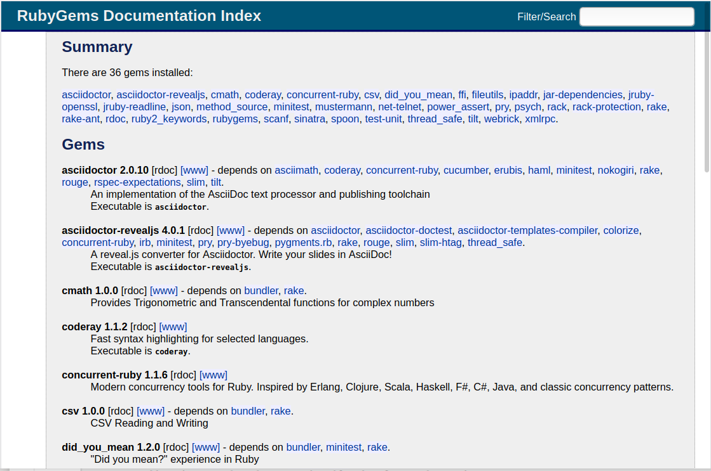

Version 5.2.6 · März 2020
Abstract
Ruby ist eine dynamische, freie Programmiersprache,
die sich einfach anwenden und produktiv einsetzen lässt.
JRuby ist eine hochleistungsfähige, robuste,
voll-threadfähige Java-Implementierung der Ruby-Programmiersprache.
Dieser Artikel ist eine Schritt-für-Schritt Anleitung zur Installation von JRuby 9k (9.2.11.0) unter GNU/Linux.
Die Programmiersprache Ruby ist die Grundlage für das Framework Ruby on Rails.
JRuby ist Open Source, wird gehostet auf GitHub
und ist freigegeben unter drei Lizenzen:
der EPL 1.0, der GPL 2 und der LGPL 2.1.
Einige Komponenten haben andere Lizenzen/ Copyright (siehe: COPYING).
Der Artikel ist in AsciiDoc geschrieben und mit Asciidoctor 2.0.10 erstellt worden.
|
|
Zu beachten ist, dass so ein Dokument zum Einen nie abschliessend
sein kann, und zum Anderen bestimmte Konfigurationen anders, oder
auf einem anderem Weg durchgeführt werden können. Es gilt wie immer: Verwendung der Anleitung auf eigene Gefahr. |
Vorraussetzungen
Die Installation wird für Ubuntu 18.04 LTS (Bionic Beaver) beschrieben.
Gleichwohl sind die einzelnen Schritte auch für
andere Debian-basierte GNU/Linux Distributionen übertragbar.
Die System-Installation des OpenJDK ist, wie in JDK beschrieben, durchgeführt worden.
|
|
Nicht installieren! |
Download
-
JRuby 9.2.11.0
jruby-dist-9.2.11.0-bin.tar.gz(ca. 24,4 MB)
2020-03-02 (Release date)- Release-Notes
-
JRuby 9.2.x is our new major version of JRuby.
It is expected to be compatible with Ruby 2.5.x and stay in sync with C Ruby.
JRuby 9.2.0.0 is our first release for 2.5 support.
|
|
Historisches
Die neue JRuby-Version 9.0.0.0 wurde am 22.07.2015 mit bestimmten Zielen veröffentlicht:
|
JRuby Dev Team @jruby
Quick releases are the best releases! JRuby 9.2.11.0 is out,
fixing regressions in deploying gems inside jar files and a
performance issue with Kernel#caller and friends.
Probably the last 9.2.x release before 9.3!
Installation
Für die Verwaltung der Ruby-Installationen verwende ich Chruby.
Ruby sollte im Verzeichnis /opt/rubies oder ~/.rubies installiert werden.
Dann kann chruby automatisch die Installation verwalten.
Step 1: Auspacken des Source-Code
$ tar xzvf jruby-dist-9.2.11.0-bin.tar.gz -C /opt/rubies/ ...
Step 2: Ziel-Verzeichnis überprüfen, Symbolischen Link erzeugen
$ ls -l /opt/rubies/drwxr-sr-x 6 sid sid 4096 Mär 2 20:28 jruby-9.2.11.0 drwxr-xr-x 6 sid sid 4096 Dez 12 2018 ruby-2.5.3 $ ln -s jruby /opt/rubies/jruby-9.2.11.0/bin/ruby
| Ziel-Verzeichnis. | |
| Symbolischen Link erzeugen. |
Step 3: Installation verifizieren
$ ls -l /opt/rubies/jruby-9.2.11.0 drwxr-sr-x 2 sid sid 4096 Mär 6 09:14 bin-rw-r--r-- 1 sid sid 131622 Mär 2 20:21 COPYING -rw-r--r-- 1 sid sid 218 Mär 2 20:21 LEGAL drwxr-sr-x 4 sid sid 4096 Mär 6 09:13 lib -rw-r--r-- 1 sid sid 2581 Mär 2 20:21 LICENSE.RUBY drwxr-sr-x 6 sid sid 4096 Mär 6 09:13 samples drwxr-sr-x 3 sid sid 4096 Mär 6 09:13 tool
| Datum der Installation. | |
| Release Date. |
$ ls -l /opt/rubies/jruby-9.2.11.0/bin -rwxr-xr-x 1 sid sid 5515 Mär 2 20:25 ast-rwxr-xr-x 1 sid sid 152 Mär 2 20:25 testrb -rw-r--r-- 1 sid sid 43 Mär 2 20:25 testrb.bat
| Kommando ast für ein GNU/Linux-System | |
| Kommando ast.bat für ein MS Windows-System | |
| Symbolischen Link in Step 2 erzeugt! |
Step 4: chruby
$ source /usr/local/share/chruby/chruby.sh $ chruby jruby-9.2.11.0 ruby-2.5.3 $ chruby jruby-9.2.11.0 ...
| Siehe Tipp! |
|
|
Zusätzliche Ausgaben: WARNING
... WARNING: An illegal reflective access operation has occurred WARNING: Illegal reflective access by com.headius.backport9.modules.Modules to method sun.nio.ch.NativeThread.signal(long) WARNING: Please consider reporting this to the maintainers of com.headius.backport9.modules.Modules WARNING: Use --illegal-access=warn to enable warnings of further illegal reflective access operations WARNING: All illegal access operations will be denied in a future release export JAVA_OPTS="$(echo --add-opens=java.base/{sun.nio.ch,java.lang,java.security,java.util,java.security.cert,java.util.concurrent,java.util.zip,java.lang.reflect,java.util.regex,java.net,java.io,java.lang,javax.crypto}=ALL-UNNAMED) --illegal-access=warn"
|
$ jruby -v
| Die Version JRuby 9.2.11.0 entspricht dem Entwicklungsstand von Ruby 2.5.7. |
$ which gem /opt/rubies/jruby-9.2.11.0/bin/gem $ gem -v 3.0.6 $ gem list *** LOCAL GEMS *** cmath (default: 1.0.0) csv (default: 1.0.0) did_you_mean (1.2.0) fileutils (default: 1.1.0) ipaddr (default: 1.2.0) jar-dependencies (default: 0.4.0) jruby-openssl (default: 0.10.4 java) jruby-readline (default: 1.3.7 java) json (default: 2.2.0 java) minitest (5.10.3) net-telnet (0.1.1) power_assert (1.1.3) psych (default: 3.1.0 java) rake (12.3.2) rake-ant (default: 1.0.4) rdoc (default: 6.1.2) scanf (default: 1.0.0) test-unit (3.2.8) webrick (default: 1.4.2) xmlrpc (0.3.0)
$ which rake /opt/rubies/jruby-9.2.11.0/bin/rake $ rake -V rake, version 12.3.2
Step 5 Vollständigkeit …
$ jruby -ropenssl -rzlib -rreadline -e "puts 'Happy new Ruby'" Happy new Ruby
$ which irb /opt/rubies/jruby-9.2.11.0/bin/irb $ irb irb(main):001:0> RUBY_VERSION => "2.5.7" irb(main):002:0> RUBY_PATCHLEVEL => 0 irb(main):003:0> Time.now.to_s => "2020-03-06 09:26:44 +0100" irb(main):004:0> Time.now.friday? => true irb(main):005:0> exit
$ ri Array#each
| Dokumentation ist nicht installiert! |
|
|
Ich war nicht in der Lage die Ruby-Dokumentation zu installieren. |
RubyGems
RubyGems (oder kurz Gems) ist das offizielle Paketsystem für die
Programmiersprache Ruby. Mit dem Paketsystem hat der Anwender die Möglichkeit,
mehrere (zum Beispiel ältere oder jüngere) Versionen eines Programmes,
Programmteiles oder einer Bibliothek gesteuert nach Bedarf einzurichten,
zu verwalten oder auch wieder zu entfernen.
→ Wikipedia: RubyGems
|
|
Einige Gems (Bibliotheken) sind direkt in der Programmiersprache C umgesetzt. Für JRuby muß dann die entsprechende Java-Version installiert werden. Das Ruby-Programm gem wird sie hierbei unterstützen. |
asciidoctor
$ gem install asciidoctor coderay
| Asciidoctor ist die Neu-Implementation von AsciiDoc in Ruby. AsciiDoc ist eine einfache Auszeichnungssprache, die dazu dient, Texte in verschiedenen Dokumentenformaten zu veröffentlichen. |
|
| CodeRay is a fast and easy syntax highlighting for selected languages, written in Ruby. Comes with RedCloth integration and LOC counter. |
asciidoctor-revealjs
$ gem install asciidoctor-revealjs
| Asciidoctor-Reveal.js ist ein Konverter der ein AsciiDoc-Dokument in eine HTML5-Präsentation umwandelt, um mit dem Framework Reveal.js ausgeführt zu werden. |
pry
$ gem install pry
| Pry is a powerful alternative to the standard IRB (Interactive Ruby) shell for Ruby. | |
| Es wurde automatisch die Java-Version von pry installiert. |
sinatra
$ gem install sinatra
| Sinatra ist eine freie und open source Webapplikationsbibliothek und eine in Ruby geschriebene domänenspezifische Sprache. Sinatra setzt das Rack Webserver-Interface voraus. → Wikipedia: Sinatra (Software) |
RubyGems: list
$ gem list *** LOCAL GEMS *** asciidoctor (2.0.10)
| 15 Gems zusätzlich installiert. |
RubyGems — mit chruby
Das Verzeichnis ~/.gem/jruby/2.5.7/… — entspricht der Ruby-Version — nicht der JRuby-Version!
list
Mit chruby werden die zusätzlichen RubyGems im Home-Verzeichnis installiert: ~/.gem/jruby/
$ ls -l ~/.gem/jruby/2.5.7/gems drwxr-xr-x 6 sid sid 4096 Mär 6 09:29 asciidoctor-2.0.10 drwxr-xr-x 6 sid sid 4096 Mär 6 09:30 asciidoctor-revealjs-4.0.1 drwxr-xr-x 4 sid sid 4096 Mär 6 09:29 coderay-1.1.2 drwxr-xr-x 4 sid sid 4096 Mär 6 09:30 concurrent-ruby-1.1.6 drwxr-xr-x 2 sid sid 4096 Mär 6 09:32 ffi-1.12.2-java drwxr-xr-x 4 sid sid 4096 Mär 6 09:32 method_source-0.9.2 drwxr-xr-x 5 sid sid 4096 Mär 6 09:34 mustermann-1.1.1 drwxr-xr-x 4 sid sid 4096 Mär 6 09:32 pry-0.12.2-java drwxr-xr-x 6 sid sid 4096 Mär 6 09:34 rack-2.2.2 drwxr-xr-x 3 sid sid 4096 Mär 6 09:34 rack-protection-2.0.8.1 drwxr-xr-x 3 sid sid 4096 Mär 6 09:34 ruby2_keywords-0.0.2 drwxr-xr-x 4 sid sid 4096 Mär 6 09:34 sinatra-2.0.8.1 drwxr-xr-x 4 sid sid 4096 Mär 6 09:32 spoon-0.0.6 drwxr-xr-x 8 sid sid 4096 Mär 6 09:30 thread_safe-0.3.6-java drwxr-xr-x 4 sid sid 4096 Mär 6 09:34 tilt-2.0.10
executable
Mit chruby werden die zusätzlichen Kommandos ebenfalls im Home-Verzeichnis installiert: ~/.gem/jruby/
$ ls -l /opt/rubies/jruby-9.2.11.0/bin
| Keine Veränderung im Installations-Verzeichnis! |
$ ls -l ~/.gem/jruby/2.5.7/bin
CAUTION:
RubyGems Documentation Index
Auf die installierte Dokumentation zugreifen.
# gem server Server started at http://0.0.0.0:8808
Browser> http://localhost:8808/
RubyGems Documentation Index

⇧ · Document generated with Asciidoctor 2.0.10.